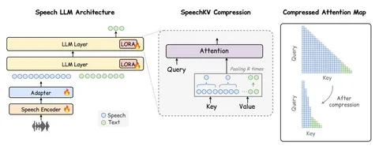
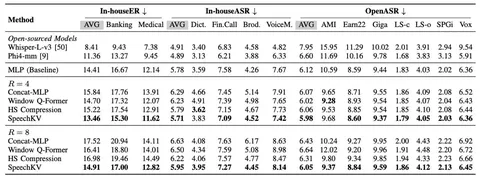

Инференс в speech LLM часто обходится дорого — и во многом именно из-за длины аудиопоследовательностей. Разберём статью, предлагающую необычное решение этой проблемы.
Речь устроена более разреженно, чем текст. Так, 10 секунд аудио после speech-энкодера могут превратиться примерно в 125 аудиотокенов, хотя соответствующий текст займёт всего 30–40 токенов — разница примерно в четыре раза.
На этапе обучения это не критично, но во время авторегрессивного декодинга начинаются сложности. Даже если мы не пересчитываем аттеншн на каждом шаге для всего префикса, а берём сохраненные значения из кеша, каждый новый токен смотрит на все предыдущие keys и values. В результате для каждого нового токена приходится работать с длинной последовательностью аудио.
Для более эффективной работы мы хотим уменьшить количество speech positions. Делать это можно на разных уровнях. Например, в большинстве современных моделей в энкодере происходит downsampling, а в адаптере несколько соседних эмбеддингов можно объединить в один. Авторы SpeechKV предлагают другой вариант: уменьшать количество speech positions в KV-кеше LLM, сохраняя в энкодере и адаптере как можно больше информации.
Суть метода: начиная с некоторого слоя LLM авторы объединяют каждые R подряд идущих speech-позиций в KV-кеше с помощью обучаемого пулинга — линейный gate по key-векторам выдаёт softmax-веса внутри окна, и с этими весами усредняются и key-, и value-векторы. Окна не пересекаются, сжатие применяется только к speech-позициям, а текст, query-векторы и residual stream остаются в полном разрешении; при R=4, например, четыре соседних key- и value-вектора превращаются в один.
В экспериментах авторы взяли Qwen3-1.7B, обучили speech-энкодер, адаптер и LoRA при замороженных остальных весах LLM на 71 тыс. часов открытых ASR-данных. Оценивали модель на OpenASR, in-house ASR-сетах и отдельно — на entity recognition в банковском и медицинском доменах.
SpeechKV сравнили с бейзлайном без компрессии, с двумя методами, которые делают downsampling речи раньше — на уровне адаптера (Concat-MLP и Window Q-Former), и с альтернативой, сжимающей внутри LLM не KV, а весь hidden state. При R=4 на out-of-domain-сетах компрессия в адаптере просаживает качество, потому что, по предположению авторов, fine-grained-информация теряется слишком рано и LLM не может её восстановить.
В методе SpeechKV speech positions после сжатия с R=4 по гранулярности становятся ближе к текстовому, размер speech-части KV-кеша сокращаются примерно в 2,8 раза, а decoding в vLLM ускоряется в 1,5–2 раза. Чем длиннее аудио, тем заметнее выигрыш. Увеличение коэффициента сжатия до R=8 почти не даёт дополнительного ускорения: bottleneck постепенно смещается в FFN-слои и текстовую часть KV-кеша.
Сжимать KV начинают только с пятого слоя, потому что на первых слоях представления соседних speech-позиций сильно различаются, а дальше косинусная близость между ними выходит на плато, так что объединять их можно почти без потери информации. Аблейшены это подтверждают: старт с третьего или седьмого слоя даёт заметно худшие результаты на in-house-сетах.
Главное ограничение работы — пока неясно, насколько результаты переносятся на более крупные speech LLM, другие архитектуры и задачи за пределами ASR и entity recognition. Эксперименты проведены на небольшой Qwen3-1.7B и на данных, существенно меньших по масштабу, чем те, на которых обучают современные универсальные speech LLM. Поэтому SpeechKV стоит воспринимать не как подтверждённый универсальный рецепт, а как удачную демонстрацию того, что сжимать аудио необязательно на входе в LLM: часть избыточности можно убрать позднее, непосредственно в KV-кеше, сохранив полезные низкоуровневые детали речи.
Именно это делает направление интересным для дальнейшей проверки на больших моделях. Если эффект сохранится при масштабировании, KV-компрессия может стать относительно простым способом снизить стоимость long-audio inference без заметной деградации качества.
Екатерина Козлова

